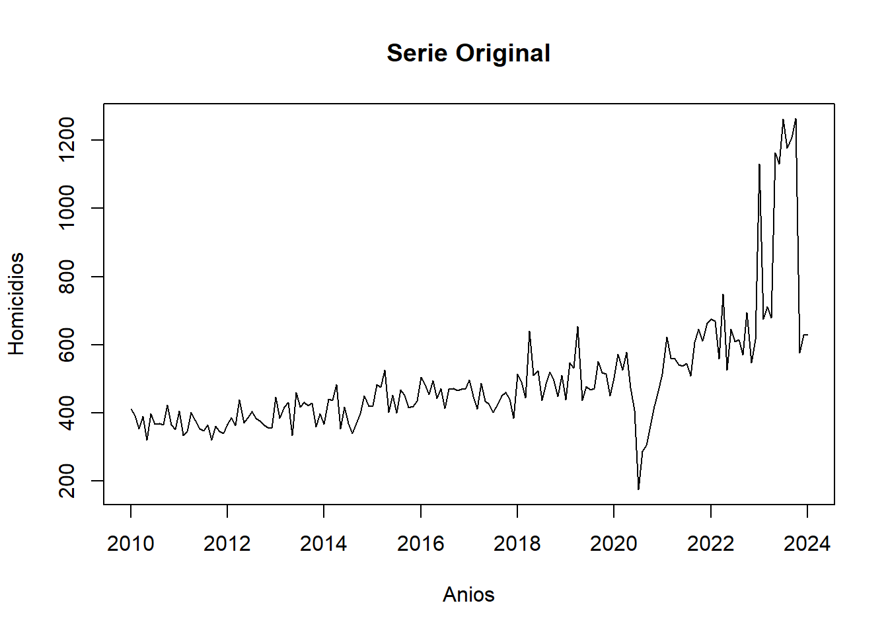
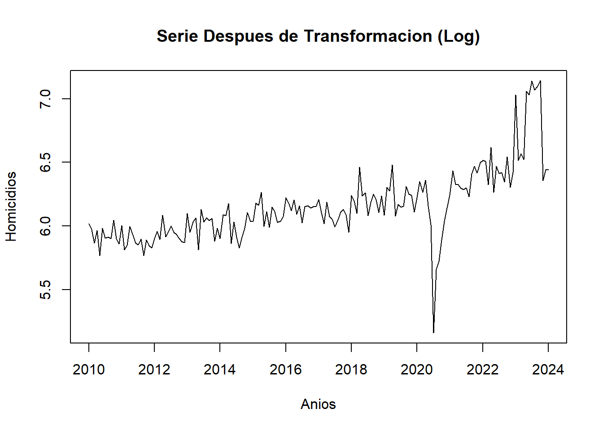
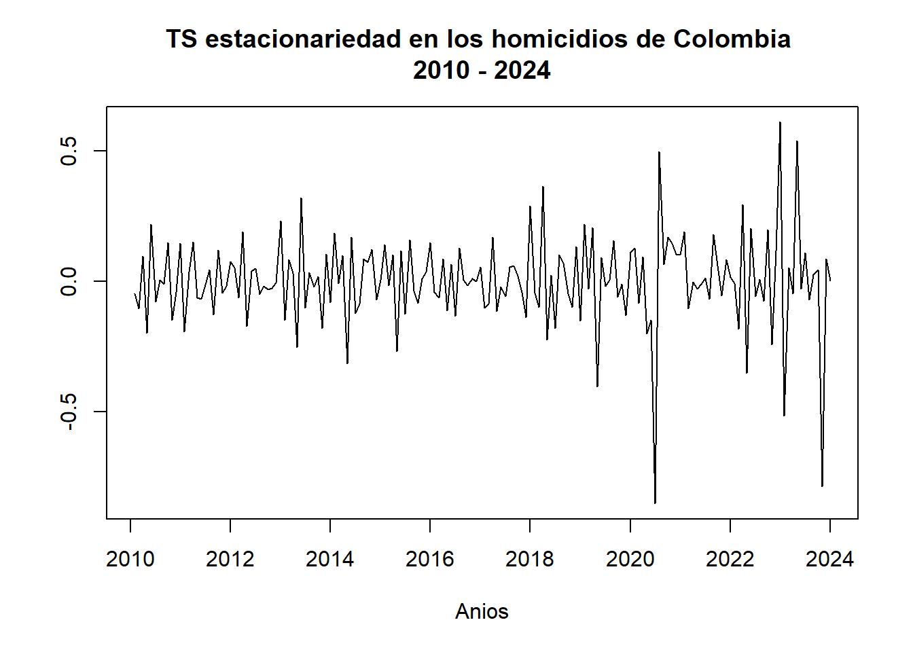
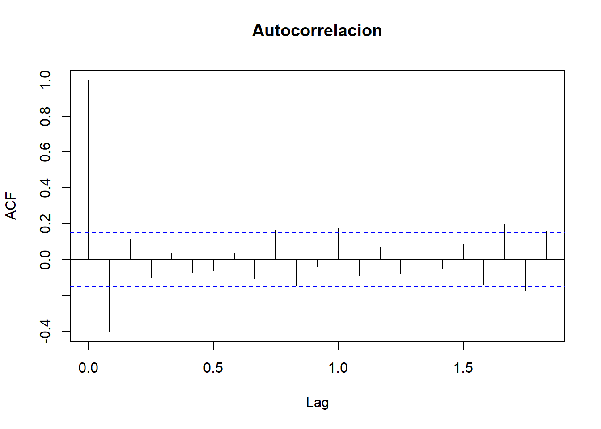
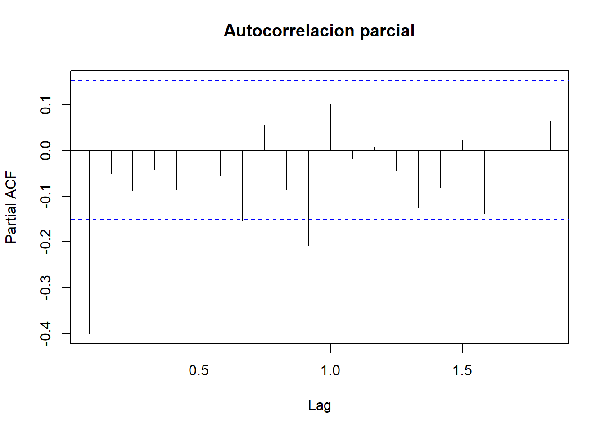

chapter4 Implementacion de Transformaciones en la Serie de tiempo
En este capitulo exploraremos diferentes tecnicas de transformacion que nos permitiran preparar nuestra serie de tiempo para aplicar los modelos requeridos para realizar las predicciones deseadas, dentro de las trnasformaciones que abordaremos estan:
Transformacion Logaritmica
Diferenciacion
Iniciaremos evaluando cuantas diferenciaciones son necesarias para lograr estacionaridad en nuestra serie de tiempo.
4.0.1 - Diferenciación
Dado a que en los modelos de series de tiempo se requiere tener en cuenta la estacionaridad, para una mejor modelización y capacidad predictiva, se procede a obtener las diferencias necesarias para lograr el cumplimiento de este supuesto.
¿Cuántas diferencias se necesitan para hallar estacionariedad?
Despues de realizar el procedimiento de diferenciacion se llega a la conclusion que se solo se requieren 1 diferencias para lograr la estacionariedad requerida para el modelamiento.
4.0.2 - Transformación Logaritmica
La transformacion logaritmica permite eliminar la tendencia de serie de tiempo, esto con el objetivo de estabilizar el comportamiento de la serie y que esta no se vea afectada por este componente durante el modelamiento y la prediccion, cabe resaltar que estas transformaciones, en muchos casos deben ser revertidas, como por ejemplo al realizar validaciones cruzadas entre modelos para poder tener valores en la misma escala.



Luego de aplicar la transformacion logaritmica a la serie de tiempo, se observa como se minimizan las diferencias en la serie, presentandonos una grafica con valores mas estables, esto nos ayuda a cumplir con el supuesto de que la serie tenga una variabilidad constante.
teniendo en cuenta que la serie no es estacionaria se debe continuar con la plicacion de la diferenciacion sugerida por la prueba Dicker - Fuller para lograr una serie que cumpla las condiciones para su correcto modelamiento y predicciones.
4.0.3 - Aplicación de Diferenciación
Luego de haber aplicado la transformacion logaritmica procederemos con la implementacion de la diferenciacion, para realizar este procedimiento nos apoyaremos en la funcion diff.


Tal y como se observa en la grafica, la diferenciacion nos ha permitido tener una serie mucho mas estable eliminando las variaciones extremas para tener datos mas uniformes.
NOTA: esta transformacion debera ser revertida en futuros pasos para devolver los valores de la prediccion a las escalas originales
4.0.4 - Aplicación de función ACF
Como parte de la exploracion de la serie transformada se realiza la verificacion de las correlaciones luego de las transformaciones para comprobar la estacionaridad de la serie transformada


El realizar la autocorrelacion nos permite identificar un comportamiento estacionario con respecto al los resagos de tiempo en la serie.
4.0.5 - Aplicación de función PACF
al igual que el analisis de autocorrelacion ACF el analisis de autocorrelacion parcial PACF nos permite evaluar la autoregresividad de la serie de tiempo.


Al identificar la estructura autorregresiva en la serie, se tiene que, se necesitan 3 rezagos para predecir el valor actual de la serie.